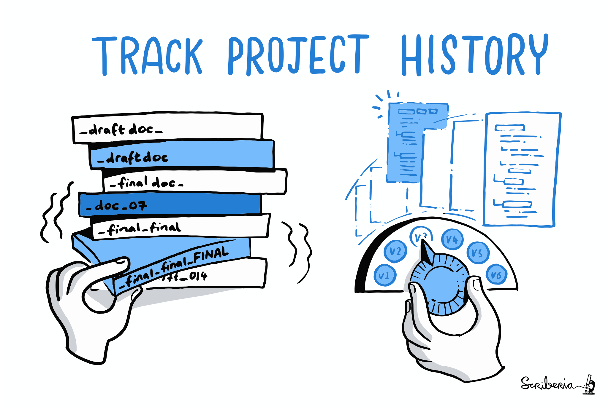
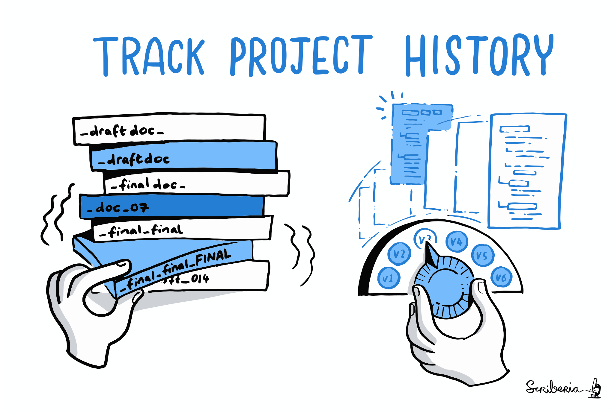
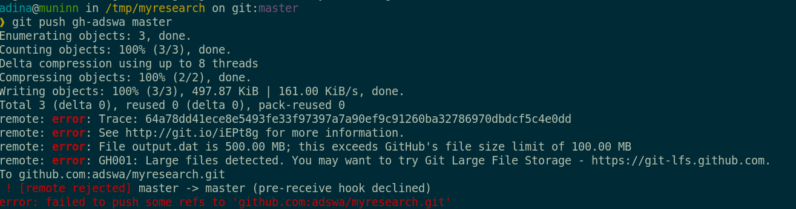
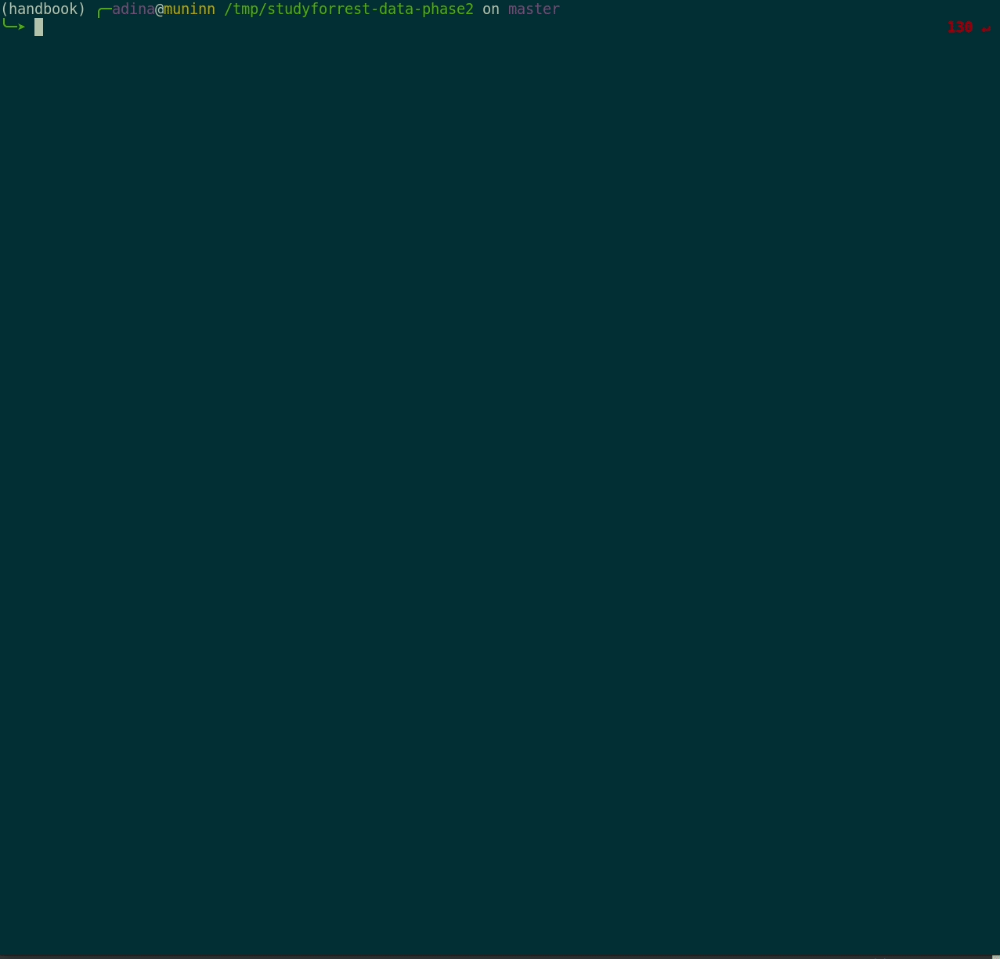

Participation modes
Prerequisites: Installation and Configuration
- Your installed version of DataLad should be 0.16.1
datalad --version
0.16.1$ git config --list
user.name=Adina Wagner
user.email=adina.wagner@t-online.de
[...]
$ git config set --global user.name "Adina Wagner"
$ git config set --global user.email "adina.wagner@t-online.de"Using DataLad
- DataLad can be used from the command line
- ... or with its Python API
- ... and other programming languages can use it via system call
datalad create mydatasetimport datalad.api as dl
dl.create(path="mydataset")# in R
> system("datalad create mydataset")
Using DataLad
- Every DataLad command consists of a main
command followed by a sub-command. The main and the sub-command can have options.

- Example (main command, subcommand, several subcommand options):
$ datalad save -m "Saving changes" --recursive - Use --help to find out more about any (sub)command
and its options, including detailed description and examples (q to close). Use -h to get a short
overview of all options
$ datalad save -h Usage: datalad save [-h] [-m MESSAGE] [-d DATASET] [-t ID] [-r] [-R LEVELS] [-u] [-F MESSAGE_FILE] [--to-git] [-J NJOBS] [--amend] [--version] [PATH ...] Use '--help' to get more comprehensive information.
DataLad Datasets
- DataLad's core data structure
- Dataset = A directory managed by DataLad
- Any directory of your computer can be managed by DataLad.
- Datasets can be created (from scratch) or installed
- Datasets can be nested: linked subdirectories
- Let's start by creating a dataset:
$ datalad create -c text2git my-datasetDataLad Datasets
A DataLad dataset is a joined Git + git-annex repository
What is version control?
 

- keep things organized
- keep track of changes
- revert changes or go back to previous states
Why version control?

Version Control
- DataLad knows two things: Datasets and files


Local version control
Procedurally, version control is easy with DataLad!

Advice:
- Save meaningful units of change
- Attach helpful commit messages
Preview: Start to record provenance
- Have you ever saved a PDF to read later onto your computer, but forgot where you got it from?
- Digital Provenance = "The tools and processes used to create a digital file, the responsible entity, and when and where the process events occurred"
-
The history of a dataset already contains provenance, but there is more
to record - for example: Where does a file come from?
datalad download-urlis helpful
Summary - Local version control
datalad createcreates an empty dataset.- Configurations (-c yoda, -c text2git) are useful (details soon).
- A dataset has a history to track files and their modifications.
- Explore it with Git (git log) or external tools (e.g., tig).
datalad saverecords the dataset or file state to the history.- Concise commit messages should summarize the change for future you and others.
datalad download-urlobtains web content and records its origin.- It even takes care of saving the change.
datalad statusreports the current state of the dataset.- A clean dataset status (no modifications, not untracked files) is good practice.
Questions!
Awkward silence can be bridged with awkward MC questions :)Teaser: Time-travelling
Comprehensive walk-through handbook.datalad.org/basics/101-137-history.html- Mistakes are not forever anymore: Past changes can transparently be undone
- Become a time-bender: Travel back in time or rewrite history
- Prerequisite: Understand Git IDs and "refs"
- Commit hash/Commit SHA: A 40-character string identifying each commit
- Branch names, e.g., main
- Tags, e.g., v.0.1
- A pointer to the checked-out (current) commit on the current branch, HEAD

Code: psychoinformatics-de.github.io/rdm-course/01-content-tracking-with-datalad/index.html#breaking-things-and-repairing-them
Summary: Interacting with Git's history (teaser)
- Interactions with Git's history require Git commands, but are immensely powerful
- More in handbook.datalad.org/basics/101-137-history.html
git restoreis a dangerous (!), but sometimes useful command:- It removes unsaved modifications to restore files to a past, saved state. What has been removed by it can not be brought back to life!
git revert [hash]transparently undoes a past commit- It will create a new entry in the revision history about this.
- Commands that will be introduced later:
git checkoutlets you time-travel.- Commands that are out of scope but useful to know:
git rebasechanges andgit resetrewinds history without creating a commit about it (see Handbook chapter for examples).- A life-saver that is not well-known:
git reflog - A time-limited backlog of every past performed action, can undo every mistake except
git restoreandgit clean.
Questions!
Awkward silence can be bridged with awkward MC questions :)A look underneath the hood
(In-depth explanations how and why things work, with plenty of teasers to additional features)
There are two version control tools at work - why?
Git does not handle large files well.

There are two version control tools at work - why?
Git does not handle large files well.

And repository hosting services refuse to handle large files: 

git-annex to the rescue! Let's take a look how it works
Consuming datasets
- Here's how to get a dataset:

Consuming datasets
- Here's how a dataset looks after installation: 
Plenty of data, but little disk-usage
- Cloned datasets are lean. "Meta data" (file names, availability) are present, but no file content:
$ datalad clone git@github.com:psychoinformatics-de/studyforrest-data-phase2.git
install(ok): /tmp/studyforrest-data-phase2 (dataset)
$ cd studyforrest-data-phase2 && du -sh
18M .$ datalad get sub-01/ses-movie/func/sub-01_ses-movie_task-movie_run-1_bold.nii.gz
get(ok): /tmp/studyforrest-data-phase2/sub-01/ses-movie/func/sub-01_ses-movie_task-movie_run-1_bold.nii.gz (file) [from mddatasrc...]# eNKI dataset (1.5TB, 34k files):
$ du -sh
1.5G .
# HCP dataset (~200TB, >15 million files)
$ du -sh
48G . Git versus Git-annex
- Data in datasets is either stored in Git or git-annex
- By default, everything is annexed, i.e., stored in a dataset annex by git-annex
| Git | git-annex |
| handles small files well (text, code) | handles all types and sizes of files well |
| file contents are in the Git history and will be shared upon git/datalad push | file contents are in the annex. Not necessarily shared |
| Shared with every dataset clone | Can be kept private on a per-file level when sharing the dataset |
| Useful: Small, non-binary, frequently modified, need-to-be-accessible (DUA, README) files | Useful: Large files, private files |
Git versus Git-annex
Useful background information for demo later. Read this handbook chapter for detailsGit and Git-annex handle files differently: annexed files are stored in an annex. File content is hashed & only content-identity is committed to Git.
- Files stored in Git are modifiable, files stored in Git-annex are content-locked
- Annexed contents are not available right after cloning,
only content identity and availability information (as they are stored in Git).
Everything that is annexed needs to be retrieved with
datalad getfrom wherever it is stored.
|
|

|
Git versus Git-annex

Git versus Git-annex
-
When sharing datasets with someone without access to the same computational
infrastructure, annexed data is not necessarily stored together with the rest
of the dataset (more in the session on publishing).

-
Transport logistics exist to interface with all major storage providers.
If the one you use isn't supported, let us know!
Git versus Git-annex
-
Users can decide which files are annexed:
- Pre-made run-procedures, provided by DataLad (e.g.,
text2git,yoda) or created and shared by users (Tutorial) - Self-made configurations in
.gitattributes(e.g., based on file type, file/path name, size, ...; rules and examples ) - Per-command basis (e.g., via
datalad save --to-git)
text2gitText versus binary files
An overview of text- versus binary files and implications for version control is in psychoinformatics-de.github.io/rdm-course/02-structuring-data/index.html#file-types-text-vs-binaryDisk-space aware workflows
- Clone the input data:
$ datalad clone git@github.com:datalad-datasets/machinelearning-books.git
install(ok): /tmp/machinelearning-books (dataset)
$ cd machinelearning-books && du -sh
348K .$ ls
A.Shashua-Introduction_to_Machine_Learning.pdf
B.Efron_T.Hastie-Computer_Age_Statistical_Inference.pdf
C.E.Rasmussen_C.K.I.Williams-Gaussian_Processes_for_Machine_Learning.pdf
D.Barber-Bayesian_Reasoning_and_Machine_Learning.pdf
[...]$ datalad get A.Shashua-Introduction_to_Machine_Learning.pdf
get(ok): /tmp/machinelearning-books/A.Shashua-Introduction_to_Machine_Learning.pdf (file) [from web...]$ datalad drop A.Shashua-Introduction_to_Machine_Learning.pdf
drop(ok): /tmp/machinelearning-books/A.Shashua-Introduction_to_Machine_Learning.pdf (file) [checking https://arxiv.org/pdf/0904.3664v1.pdf...]Distributed availability
- git-annex conceptualizes file availability information as a decentral network. A file can exist in multiple different locations. git annex whereis tells you which are known:
$ git annex whereis inputs/images/chinstrap_02.jpg
whereis inputs/images/chinstrap_02.jpg (1 copy)
00000000-0000-0000-0000-000000000001 -- web
c1bfc615-8c2b-4921-ab33-2918c0cbfc18 -- adina@muninn:/tmp/my-dataset [here]
web: https://unsplash.com/photos/8PxCm4HsPX8/download?force=true
ok
- Here is a file with a registered remote location (the web)
$ datalad drop inputs/images/chinstrap_02.jpg
drop(ok): /home/my-dataset/inputs/images/chinstrap_02.jpg (file)
$ datalad get inputs/images/chinstrap_02.jpg
get(ok): inputs/images/chinstrap_02.jpg (file)
$ datalad drop inputs/images/chinstrap_01.jpg
drop(error): inputs/images/chinstrap_01.jpg (file)
[unsafe; Could only verify the existence of 0 out of 1 necessary copy;
(Use --reckless availability to override this check, or adjust numcopies.)]Data protection
Why are annexed contents write-protected? (part I)- Where the filesystem allows it, annexed files are symlinks:
(PS: especially useful in datasets with many identical files)$ ls -l inputs/images/chinstrap_01.jpg lrwxrwxrwx 1 adina adina 132 Apr 5 20:53 inputs/images/chinstrap_01.jpg -> ../../.git/annex/objects/1z/ xP/MD5E-s725496--2e043a5654cec96aadad554fda2a8b26.jpg/MD5E-s725496--2e043a5654cec96aadad554fda2a8b26.jpg - The symlink reveals git-annex internal data organization based on identity hash:
$ md5sum inputs/images/chinstrap_01.jpg 2e043a5654cec96aadad554fda2a8b26 inputs/images/chinstrap_01.jpg - git-annex write-protects files to keep this symlink functional - Changing file contents without git-annex knowing would make the hash change and the symlink point to nothing
- To (temporarily) remove the write-protection one can unlock the file
Detour & Teaser: Reproducible data analysis
Your past self is the worst collaborator:
Reproducible execution & provenance capture
datalad run wraps a command execution and records its impact on a dataset.

Reproducible execution & provenance capture
datalad run wraps a command execution and records its impact on a dataset.
commit 9fbc0c18133aa07b215d81b808b0a83bf01b1984 (HEAD -> main)
Author: Adina Wagner [adina.wagner@t-online.de]
Date: Mon Apr 18 12:31:47 2022 +0200
[DATALAD RUNCMD] Convert the second image to greyscale
=== Do not change lines below ===
{
"chain": [],
"cmd": "python code/greyscale.py inputs/images/chinstrap_02.jpg outputs/im>
"dsid": "418420aa-7ab7-4832-a8f0-21107ff8cc74",
"exit": 0,
"extra_inputs": [],
"inputs": [],
"outputs": [],
"pwd": "."
}
^^^ Do not change lines above ^^^
diff --git a/outputs/images_greyscale/chinstrap_02_grey.jpg b/outputs/images_gr>
new file mode 120000
index 0000000..5febc72
--- /dev/null
+++ b/outputs/images_greyscale/chinstrap_02_grey.jpg
@@ -0,0 +1 @@
+../../.git/annex/objects/19/mp/MD5E-s758168--8e840502b762b2e7a286fb5770f1ea69.>
\ No newline at end of file
The resulting commit's hash (or any other identifier) can be used to automatically re-execute a computation (more on this tomorrow)
Data protection
Why are annexed contents write-protected? (part 2)- When you try to modify an annexed file without unlocking you will see
"Permission denied" errors.
Traceback (most recent call last): File "/home/bob/Documents/rdm-warmup/example-dataset/code/greyscale.py", line 20, in module grey.save(args.output_file) File "/home/bob/Documents/rdm-temporary/venv/lib/python3.9/site-packages/PIL/Image.py", line 2232, in save fp = builtins.open(filename, "w+b") PermissionError: [Errno 13] Permission denied: 'outputs/images_greyscale/chinstrap_02_grey.jpg' - Use datalad unlock to make the file modifiable.
Underneath the hood (given the file system initially supported symlinks), this removes the symlink:
$ datalad unlock outputs/images_greyscale/chinstrap_02_grey.jpg $ ls outputs/images_greyscale/chinstrap_02_grey.jpg -rw-r--r-- 1 adina adina 758168 Apr 18 12:31 outputs/images_greyscale/chinstrap_02_grey.jpg - datalad save locks the file again. Locking and unlocking ensures that git-annex always finds the right version of a file.
Reproducible execution & provenance capture
datalad run wraps a command execution and records its impact on a dataset.
In addition, it can take care of data retrieval and unlocking

datalad rerun
-
datalad rerunis helpful to spare others and yourself the short- or long-term memory task, or the forensic skills to figure out how you performed an analysis - But it is also a digital and machine-reable provenance record
- Important: The better the run command is specified, the better the provenance record
- Note: run and rerun only create an entry in the history if the command execution leads to a change.
- Task: Use
datalad rerunto rerun the script execution. Find out if the output changed
Summary - Underneath the hood
- Files are either kept in Git or in git-annex.
- datalad save is used for both, but configurations (e.g., text2git), dataset rules (e.g., in a .gitattributes file, or flags change the default behavior of annexing everything
- Annexed files behave differently from files kept in Git:
- They can be retrieved and dropped from local or remote locations, they are write-protected, their content is unknown to Git (and thus easy to keep private).
- datalad clone installs datasets from URLs or local or remote paths
- Annexed files contents can be retrieved or dropped on demand, file contents of files stored in Git are available right away.
- datalad unlock makes annexed files modifiable, datalad save locks them again.
- (It is generally easier to get accidentally saved files out of the annex than out of Git - see handbook.datalad.org/basics/101-136-filesystem.html for examples)
- datalad run records the impact of any command execution in a dataset.
- Data/directories specified as
--inputare retrieved prior to command execution, data/directories specified as--outputunlocked. datalad reruncan automatically re-execute run-records later.- They can be identified with any commit-ish (hash, tag, range, ...)